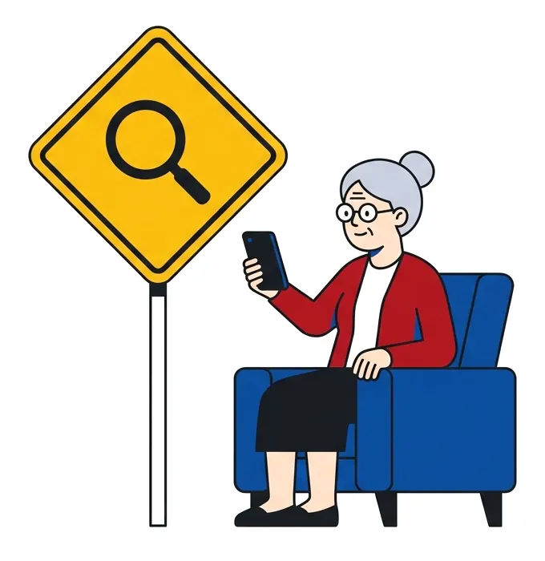
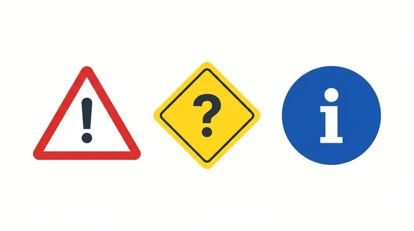

Tıklamadan önce bir bak.
Şüphelendiğin telefon numarasını, IBAN'ı, linki, ilanı ya da gelen mesajı aşağıya yapıştır. Kaç kişinin ihbar ettiğini ve nelere dikkat etmen gerektiğini söyleyelim.

Dolandırıcılığı ihbar et
İhbarın, aynı numarayı ya da IBAN'ı soran bir sonraki kişiyi uyarır. Adın, telefonun ya da e-postan istenmez. Numaralar ve IBAN'lar veritabanında açık hâliyle durmaz.
Nasıl çalışır?

İhbarlar
Dolandırılan ya da dolandırılmaktan dönen insanların ihbarları. Aynı kişinin tekrar eden ihbarı sayılmaz.
Resmî liste
Ulusal Siber Olaylara Müdahale Merkezi'nin yayımladığı zararlı bağlantılar listesi, günde iki kez güncellenir.
Site ne zaman açıldı?
Sahte siteler genellikle birkaç gün önce açılır. Sitenin kayıt tarihine bakarız.
Hiçbir sonuç "güvenli" demek değildir. Araç yalnızca bildiklerini söyler; karar her zaman sende.
Numaran ya da IBAN'ın yanlışlıkla ihbar mı edildi?
Bize yaz, inceleyelim. İtiraz kabul edilirse kayıt puanlamadan çıkarılır.